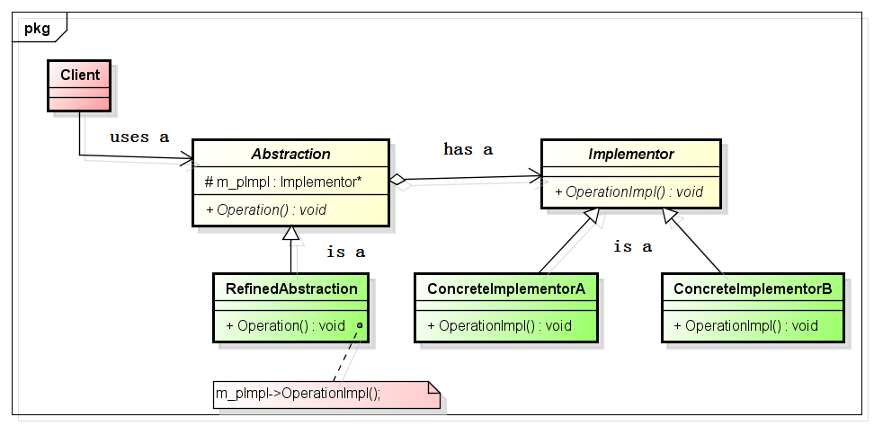

8桥接模式
1 问题描述
现在要去画一个图形，图形有长方形、圆形和扇形等等；而图形又可以加上不同的颜色，然后，我们就可以画出红色的长方形，绿色的长方形；红色的圆形，绿色的圆形等等。而这种图形的形状在变化，图形的颜色也在变化，当使用代码去实现时，如何面对这种多方面的变化呢？这就要说到今天的桥接模式了。
2 什么是桥接模式？
对于上述的图形与颜色的问题时，很多时候，我们让各个图形类继承颜色类，比如：

1 class CShape 2 { 3 }; 4 class CRectangle : public CShape 5 { 6 }; 7 class CCircle : public CShape 8 { 9 }; 10 class CColor 11 { 12 }; 13 class CRed : public CColor 14 { 15 }; 16 class CBlue : public CColor 17 { 18 }; 19 class CRedRectangle : public CRed 20 { 21 }; 22 class CBlueRectangle : public CBlue 23 { 24 };
每当我们增加一个新的图形，或者增加一种新的颜色时，对应的类就会以相乘的速度进行增加。当系统中的类变的多时，对应的管理也就变的复杂，这不是我们希望看到的。同时，我们可以看到CRedRectangle类继承自CRed类，这种继承关系合理吗？且不说有的系统是如此实现的，红色的矩形是红色吗？很显然，CRedRectangle和CRed之间不是一种is-a的关系，所以，上面的实现是及其不合理的。那么它们是什么关系呢？接着往下看。
在GOF的《设计模式:可复用面向对象软件的基础》一书中对桥接模式是这样说的：将抽象部分和它的实现部分分离，使它们都可以独立的变化。简单粗暴的说，就是抽象对外提供调用的接口；对外隐瞒实现部分，在抽象中引用实现部分，从而实现抽象对实现部分的调用，而抽象中引用的实现部分可以在今后的开发过程中，切换成别的实现部分。
3 为什么要使用桥接模式？
当一个抽象可能有多个实现时，通常用继承来协调它们。抽象类定义对该抽象的接口，而具体的子类则用不同方式加以实现。但是此方法有时不够灵活。继承机制将抽象部分与它的实现部分固定在一起，使得难以对抽象部分和实现部分独立的进行修改、扩充和重用。桥接模式把依赖具体实现，提升为依赖抽象，来完成对象和变化因素之间的低耦合，提高系统的可维护性和扩展性。桥接模式的主要目的是将一个对象的变化与其它变化隔离开，让彼此之间的耦合度最低。
4 什么时候使用桥接模式？
如果不希望在抽象和它的实现部分之间有一个固定的绑定关系，也就是继承关系；如果我们打破了这种固定的绑定关系，以后，就可以方便的在抽象部分切换不同的实现部分；
如果希望类的抽象以及它的实现都应该可以通过生成子类的方法加以扩充；如果不使用桥接模式，使用继承去实现时，在抽象类中添加一个方法，则在对应的实现类中也需要做对应的改动，这种实现不符合松耦合的要求；
如果要求对一个抽象的实现部分的修改对客户不产生影响，即客户的代码不需要重新编译，在后面的项目经验会说这方面；
如果想对客户完全隐藏抽象的实现部分；
如果一个对象有多个变化因素的时候，通过抽象这些变化因素，将依赖具体实现，修改为依赖抽象；
如果某个变化因素在多个对象中共享时，可以抽象出这个变化因素，然后实现这些不同的变化因素。
上面使用的场景，是一种建议，也是一种参考。在项目中要很好的把握一个设计模式，是有一定的难度的；当在实际项目中遇到满足上面的一点或者几点时，可以考虑使用桥接模式。
5 UML类图
Abstraction类定义了抽象类的接口，并且维护一个指向Implementor实现类的指针；
RefineAbstraction类扩充了Abstraction类的接口；
Implementor类定义了实现类的接口，这个接口不一定要与Abstraction的接口完全一致；实际上，这两个接口可以完全不同；
ConcreteImplementor类实现了Implementor定义的接口。
6 代码实现
1 #include <iostream> 2 using namespace std; 3 class Implementor 4 { 5 public: 6 virtual void OperationImpl() = 0; 7 }; 8 class ConcreteImpementor : public Implementor 9 { 10 public: 11 void OperationImpl() 12 { 13 cout<<"OperationImpl"<<endl; 14 } 15 }; 16 class Abstraction 17 { 18 public: 19 Abstraction(Implementor *pImpl) : m_pImpl(pImpl){} 20 virtual void Operation() = 0; 21 protected: 22 Implementor *m_pImpl; 23 }; 24 class RedfinedAbstraction : public Abstraction 25 { 26 public: 27 RedfinedAbstraction(Implementor *pImpl) : Abstraction(pImpl){} 28 void Operation() 29 { 30 m_pImpl->OperationImpl(); 31 } 32 }; 33 int main(int argc, char *argv[]) 34 { 35 Implementor *pImplObj = new ConcreteImpementor(); 36 Abstraction *pAbsObj = new RedfinedAbstraction(pImplObj); 37 pAbsObj->Operation(); 38 delete pImplObj; 39 pImplObj = NULL; 40 delete pAbsObj; 41 pAbsObj = NULL; 42 return 0; 43 }
根据对代码的理解，能想象到CRedRectangle和CRed是什么关系吗？我们可以理解为红色的矩形包含红色，也就是包含的关系，也就是软件设计中的组合关系(has-a)。
7 项目经验
这是一个我经历的项目，也是做起来比较轻松的一个项目。项目是这样的，需要对一个中间的通信库进行改写，保留以前的通信方式的同时，需要使用一种新的通信协议去和底层模块进行通信。现有的代码是一个COM程序，向外提供了可以调用的接口。根据客户提供的源码，我们进行了分析；在分析之前，我们有一种担心，就是怕用户的代码是接口和实现混在一起的；但是，分析之后，让我们很吃惊，客户的代码结构很清晰，层次非常清楚，代码中使用的就是我们今天这里说的桥接模式。由于抽象的接口和实现完全进行了分离，我们在进行重写时，只需要实现我们的一个类，然后在接口中引用我们实现的类，就大功告成了，这样做到了客户端不需要做任何修改，就可以完美的替换掉原来的通信层，真的是前人栽树树，后人乘凉啊。
8 总结
桥接模式使得抽象和实现进行了分离，抽象不用依赖于实现，让抽象和实现部分各自修改起来都很方便，使用组合（就是Abstraction类中包含了Implementor）的方式，降低了耦合度，同时也有助于分层，从而产生更好的结构化系统。通过实际的项目经验，使用了桥接模式的代码，对以后的扩展有很大的帮助。
本页共28段，2286个字符，5850 Byte(字节)